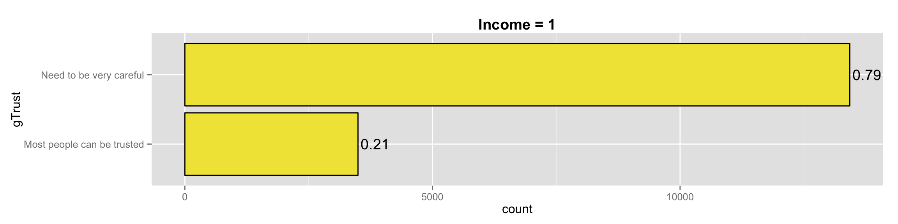
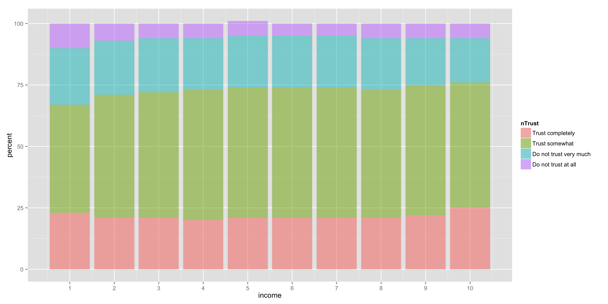
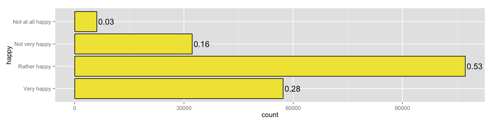
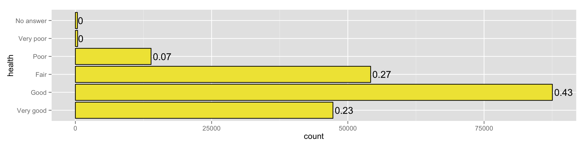
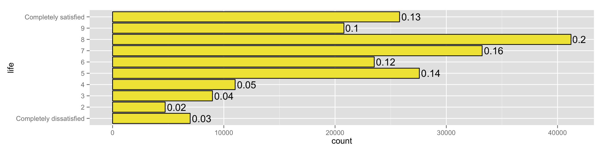
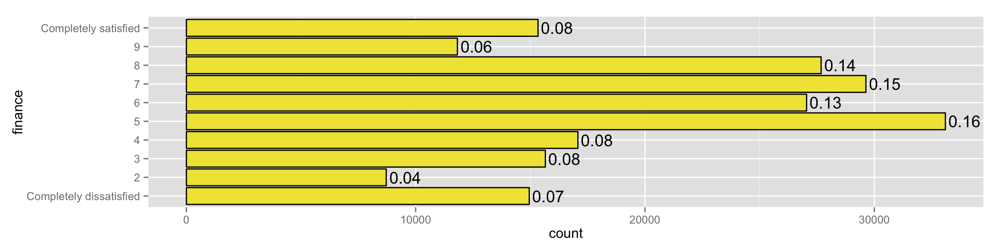
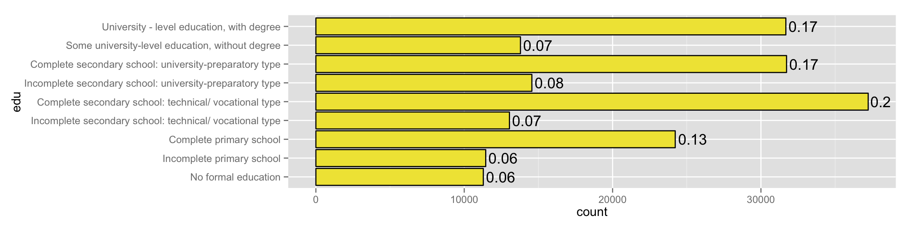

overall distribution is as follows: 
community trust does not vary across income. nearly identical proportional distribution: 
back to table of contents
overall distribution is as follows: 
| Dependent variable: | |
| gTrust | |
| happy | -0.507*** |
| (0.014) | |
| Constant | 1.421*** |
| (0.013) | |
| Observations | 193,363 |
| Log Likelihood | -111,918.700 |
| Akaike Inf. Crit. | 223,841.300 |
| Note: | p<0.1; p<0.05; p<0.01 |
## (Intercept) happyTRUE
## 0.8055387 0.3759077## [1] "Most people can be trusted = 0, Need to be very careful = 1"takeaway: someone who is happy has a 37.5% likelihood of having low generalized trust
back to table of contents
overall distribution is as follows: 
| Dependent variable: | |
| gTrust | |
| healthGood | 0.145*** |
| (0.013) | |
| healthFair | 0.378*** |
| (0.015) | |
| healthPoor | 0.497*** |
| (0.024) | |
| healthVery poor | 0.460*** |
| (0.131) | |
| Constant | 0.810*** |
| (0.010) | |
| Observations | 193,659 |
| Log Likelihood | -112,188.500 |
| Akaike Inf. Crit. | 224,387.000 |
| Note: | p<0.1; p<0.05; p<0.01 |
## (Intercept) healthGood healthFair healthPoor
## 0.6921222 0.5362258 0.5934561 0.6218622
## healthVery poor
## 0.6129432## [1] "Most people can be trusted = 0, Need to be very careful = 1"takeaway: poorer the health, higher probability of having low generalized trust.
back to table of contents
overall distribution is as follows: 
| Dependent variable: | |
| gTrust | |
| life2 | -0.231*** |
| (0.051) | |
| life3 | -0.207*** |
| (0.043) | |
| life4 | -0.350*** |
| (0.041) | |
| life5 | -0.328*** |
| (0.037) | |
| life6 | -0.539*** |
| (0.037) | |
| life7 | -0.724*** |
| (0.036) | |
| life8 | -0.939*** |
| (0.035) | |
| life9 | -1.006*** |
| (0.037) | |
| lifeCompletely satisfied | -0.594*** |
| (0.037) | |
| Constant | 1.645*** |
| (0.033) | |
| Observations | 194,429 |
| Log Likelihood | -111,773.700 |
| Akaike Inf. Crit. | 223,567.500 |
| Note: | p<0.1; p<0.05; p<0.01 |
## (Intercept) life2 life3
## 0.8381503 0.4425536 0.4484541
## life4 life5 life6
## 0.4132975 0.4186733 0.3683063
## life7 life8 life9
## 0.3265110 0.2810547 0.2678220
## lifeCompletely satisfied
## 0.3557768## [1] "Most people can be trusted = 0, Need to be very careful = 1"takeaway: lower than 6 on scale of life satisfaction comes with higher probability of having low generalized trust.
back to table of contents
overall distribution is as follows: 
| Dependent variable: | |
| gTrust | |
| finance2 | -0.219*** |
| (0.035) | |
| finance3 | -0.313*** |
| (0.030) | |
| finance4 | -0.447*** |
| (0.029) | |
| finance5 | -0.418*** |
| (0.026) | |
| finance6 | -0.590*** |
| (0.026) | |
| finance7 | -0.776*** |
| (0.026) | |
| finance8 | -0.907*** |
| (0.026) | |
| finance9 | -1.021*** |
| (0.030) | |
| financeCompletely satisfied | -0.731*** |
| (0.029) | |
| Constant | 1.585*** |
| (0.022) | |
| Observations | 191,447 |
| Log Likelihood | -110,399.400 |
| Akaike Inf. Crit. | 220,818.700 |
| Note: | p<0.1; p<0.05; p<0.01 |
## (Intercept) finance2
## 0.8299320 0.4455615
## finance3 finance4
## 0.4223042 0.3900426
## finance5 finance6
## 0.3969581 0.3567213
## finance7 finance8
## 0.3151120 0.2876957
## finance9 financeCompletely satisfied
## 0.2648315 0.3250625## [1] "Most people can be trusted = 0, Need to be very careful = 1"takeaway: lower than 7 on scale of satisfaction with financial situation comes with higher probability of having low generalized trust.
back to table of contents
overall distribution is as follows: 
| Dependent variable: | |
| gTrust | |
| eduIncomplete primary school | 0.246*** |
| (0.033) | |
| eduComplete primary school | 0.067** |
| (0.028) | |
| eduIncomplete secondary school: technical/ vocational type | 0.095*** |
| (0.032) | |
| eduComplete secondary school: technical/ vocational type | -0.031 |
| (0.026) | |
| eduIncomplete secondary school: university-preparatory type | -0.116*** |
| (0.030) | |
| eduComplete secondary school: university-preparatory type | -0.171*** |
| (0.026) | |
| eduSome university-level education, without degree | -0.378*** |
| (0.030) | |
| eduUniversity - level education, with degree | -0.558*** |
| (0.026) | |
| Constant | 1.183*** |
| (0.023) | |
| Observations | 179,985 |
| Log Likelihood | -102,569.200 |
| Akaike Inf. Crit. | 205,156.500 |
| Note: | p<0.1; p<0.05; p<0.01 |
## (Intercept)
## 0.7654042
## eduIncomplete primary school
## 0.5612789
## eduComplete primary school
## 0.5167365
## eduIncomplete secondary school: technical/ vocational type
## 0.5236583
## eduComplete secondary school: technical/ vocational type
## 0.4921888
## eduIncomplete secondary school: university-preparatory type
## 0.4710654
## eduComplete secondary school: university-preparatory type
## 0.4572589
## eduSome university-level education, without degree
## 0.4066013
## eduUniversity - level education, with degree
## 0.3640989## [1] "Most people can be trusted = 0, Need to be very careful = 1"takeaway: less education comes with higher probability of having low generalized trust.
back to table of contents